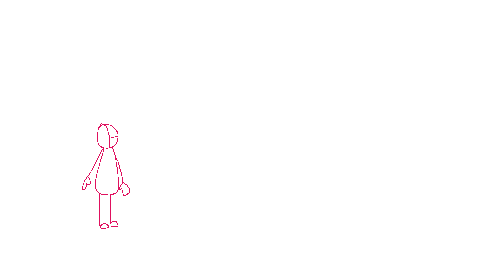

Office Depot
[2019 – 2022]A clean collaboration flow designed to feel intuitive, organized, and easy to navigate at a glance.
View projects

Portfolio / 2026
creative + entertainment + marketing
[ Aspiring Visual Development Artist & 2D Animator ]
My approach blends structure with imagination. I’m interested in design that feels cinematic, intentional, and emotionally resonant, whether through motion, typography, or visual storytelling. I bring both production discipline and a strong narrative sensibility to work that lives across brand, digital, and animation-driven spaces.
about me
My practice is rooted in visual storytelling, world-building, and a growing focus on the animation industry. With experience spanning production artist work at Microsoft and presentation design through Kforce, I bring both technical discipline and creative range to the work I make. I’m especially drawn to opportunities in animation and entertainment where design can help shape immersive worlds, support narrative development, and create emotionally engaging visual experiences.

Resume
A concise view of my background across production design, presentation design, and creative work supporting my transition into animation and entertainment.

[ Portfolio ]
Approach
Sections transition with scroll-linked movement so the page feels sequenced, not stacked. The result stays lightweight and responsive while still feeling immersive on desktop and mobile.